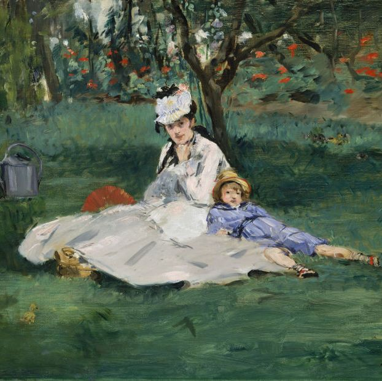
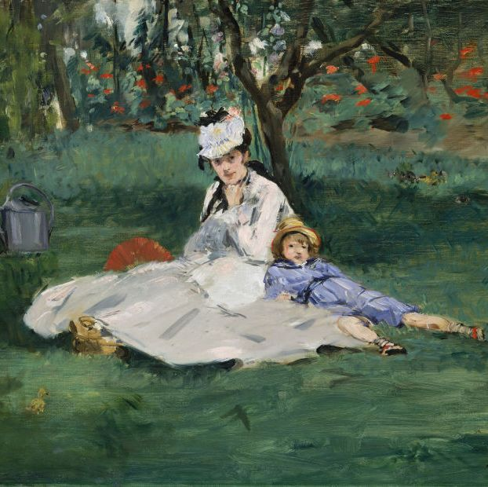

Claude Monet
Claude Monet è stato un celebre pittore francese considerato uno dei padri dell'Impressionismo.
Nato nel 1840, Monet è noto per le sue vivide rappresentazioni della natura e per la sua abilità
nell'afferrare la luce e il colore in modo immediato ed effimero. La sua tecnica distintiva si
basava sull'applicazione di pennellate rapide e fluide, che catturavano le sfumature cromatiche
e le variazioni atmosferiche con una sensibilità unica.
Monet è famoso soprattutto per le sue serie di dipinti che ritraggono gli stessi soggetti in
condizioni di luce e atmosfera diverse, come ad esempio le ninfee, i papaveri, i ponti e le
cattedrali.
Tra i suoi capolavori più celebri ci sono "Impression, soleil levant", che ha dato
il nome al movimento impressionista, e "Ninfee", una serie di dipinti che rappresentano i suoi
giardini a Giverny. La sua arte ha avuto un impatto significativo sulla storia dell'arte,
influenzando non solo gli artisti contemporanei, ma anche generazioni successive. Monet ha
continuato a dipingere fino alla fine della sua vita, cercando costantemente di catturare
la bellezza mutevole del mondo naturale. È deceduto nel 1926, lasciando un'eredità duratura
nell'arte moderna..
 
